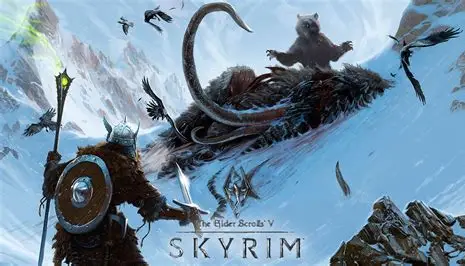
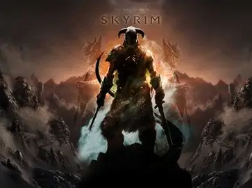
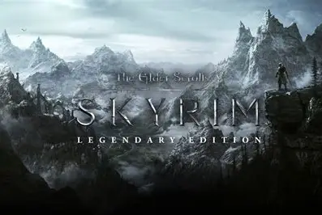

The Elder Scrolls V

The Elder Scrolls V: Skyrim é um RPG de mundo aberto ambientado na província gélida e montanhosa de Skyrim, cerca de 200 anos após os eventos do jogo anterior, Oblivion. A região está à beira do colapso, dividida por uma violenta guerra civil e sob a ameaça iminente de uma profecia apocalíptica. A Trama Principal e o Destino do Mundo O enredo principal começa com o retorno de Alduin, um dragão ancestral conhecido como o "Devorador de Mundos". Ele está ressuscitando outros dragões mortos há séculos para escravizar e destruir a humanidade. O jogador começa como um prisioneiro desconhecido que escapa por pouco de um ataque de Alduin. Logo em seguida, descobre ser o Dragonborn (Dovahkiin), um herói profético nascido com o corpo de um mortal e a alma de um dragão. Essa condição única permite ao protagonista absorver a alma dos dragões que derrota e aprender o Thu'um (o Grito ou o Poder da Voz) instantaneamente. A jornada central consiste em dominar esses poderes e encontrar uma forma de derrotar Alduin antes que o apocalipse aconteça. O Conflito Político Enquanto os dragões atacam os céus, a terra é devastada por uma guerra de ideologias: • A Legião Imperial: Defende que Skyrim deve permanecer unida ao Império para manter a estabilidade e a força contra ameaças externas (como os elfos do Domínio Aldmeri). • Os Stormcloaks (Mantos da Tormenta): Rebeldes liderados por Ulfric Stormcloak que lutam pela independência de Skyrim e pelo direito de cultuar livremente o deus Talos, que foi proibido por um tratado imperial. Liberdade Total de Exploração O grande diferencial de Skyrim é a sua liberdade. Além da missão principal e da guerra civil, o jogador pode ignorar o destino do mundo e seguir caminhos completamente independentes ao se juntar a diferentes facções, como a Guilda dos Ladrões, os Assassinos da Irmandade Sombria, o Colégio de Magos de Winterhold ou os guerreiros conhecidos como Os Companheiros. Não há classes fixas, permitindo que o personagem seja um mago poderoso, um guerreiro de armadura pesada ou um assassino furtivo de acordo com as ações praticadas pelo jogador.

